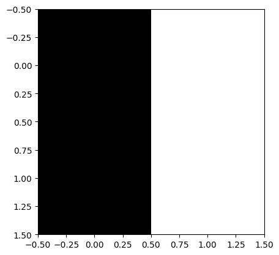
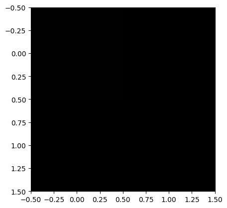
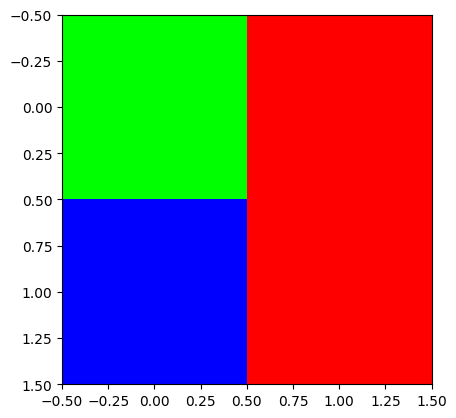

#{{<video https://youtu.be/playlist?list=PLQqh36zP38-wwdZJIQiqJdmbWB90HM-VK&si=O2VyS-dYdtqnlD25 >}}06wk-2: numpy

1. 강의영상
2. Imports
import numpy as np3. numpy
A. 선언
a=np.array([1,2,3]) # list를 만들고 ndarray화 시킴
l=[1,2,3]B. 기본연산 브로드캐스팅
a+1 ## [1,2,3] + 1 = [2,3,4]array([2, 3, 4])l+1TypeError: can only concatenate list (not "int") to lista*2array([2, 4, 6])l*2[1, 2, 3, 1, 2, 3]a/2array([0.5, 1. , 1.5])l/2TypeError: unsupported operand type(s) for /: 'list' and 'int'a**2array([1, 4, 9])l**2TypeError: unsupported operand type(s) for ** or pow(): 'list' and 'int'a%2 # %2 = 2로 나눈 나머지를 리턴 a=[1,2,3] array([1, 0, 1])l%2TypeError: unsupported operand type(s) for %: 'list' and 'int'C. 기타수학연산지원
np.sqrt(a), np.sqrt(l)(array([1. , 1.41421356, 1.73205081]),
array([1. , 1.41421356, 1.73205081]))np.log(a), np.log(l)(array([0. , 0.69314718, 1.09861229]),
array([0. , 0.69314718, 1.09861229]))np.exp(a), np.exp(l)(array([ 2.71828183, 7.3890561 , 20.08553692]),
array([ 2.71828183, 7.3890561 , 20.08553692]))np.sin(a), np.sin(l)(array([0.84147098, 0.90929743, 0.14112001]),
array([0.84147098, 0.90929743, 0.14112001]))D. 인덱싱 1차원
- 선언
l=[11,22,33,44,55,66]
a=np.array(l) - 인덱스로 접근
l[0],l[1],l[2],l[3],l[-2],l[-1](11, 22, 33, 44, 55, 66)a[0],a[1],a[2],a[3],a[-2],a[-1](11, 22, 33, 44, 55, 66)- : 이용 (슬라이싱)
l[2:4] # index 2에서 시작, index 4는 포함하지 않음 [33, 44]a[2:4] array([33, 44])- 정수배열에 의한 인덱싱
aarray([11, 22, 33, 44, 55, 66])a[[0,2,4]] # index=0, index=2, index=4 에 해당하는 원소를 뽑고 싶다 array([11, 33, 55])l[[0,2,4]] # 리스트는 불가능 TypeError: list indices must be integers or slices, not list- 부울값에 의한 인덱싱
aarray([11, 22, 33, 44, 55, 66])a[[True,False,True,False,True,False]] array([11, 33, 55])응용하면?
a < 33 array([ True, True, False, False, False, False])a[a<33]array([11, 22])리스트는 불가능
l<33 # 여기에서부터 불가능 TypeError: '<' not supported between instances of 'list' and 'int'l[[True,False,True,False,True,False]] # 이것도 불가능 TypeError: list indices must be integers or slices, not listE. 인덱싱 2차원
- 중첩리스트와 2차원 np.array 선언
A = [[1,2,3,4],[-1,-2,-3,-4],[5,6,7,8],[-5,-6,-7,-8]]
A2 = np.array(A)A2array([[ 1, 2, 3, 4],
[-1, -2, -3, -4],
[ 5, 6, 7, 8],
[-5, -6, -7, -8]])A[[1, 2, 3, 4], [-1, -2, -3, -4], [5, 6, 7, 8], [-5, -6, -7, -8]]- A의 원소 인덱싱
A[0][0] # (1,1)의 원소 1A[1][2] # (2,3)의 원소 -3A[-1][0] # (4,1)의 원소 -5- A2의 원소 인덱싱
A2[0][0] # (1,1)의 원소 1A2[1][2] # (2,3)의 원소 -3A2[-1][0] # (4,1)의 원소 -5- A2에서만 되는 기술 (넘파이에서 제시하는 신기술, R에서는 기본적으로 쓰던것, 이중list는 불가능)
A2[0,0] # (1,1)의 원소 1A2[1,2] # (2,3)의 원소 -3A2[-1,0] # (4,1)의 원소 -5- 정수배열에 의한 인덱싱 & 슬라이싱!
A2array([[ 1, 2, 3, 4],
[-1, -2, -3, -4],
[ 5, 6, 7, 8],
[-5, -6, -7, -8]])A2[0,0:2] # 1행1열, 1행2열 array([1, 2])A2[0,:] # 1행 array([1, 2, 3, 4])A2[0] # 1행array([1, 2, 3, 4])A2[[0,2],:] # 1행, 3행 array([[1, 2, 3, 4],
[5, 6, 7, 8]])A2[[0,2]] # 1행, 3행 array([[1, 2, 3, 4],
[5, 6, 7, 8]])A2[:,0] # 1열 array([ 1, -1, 5, -5])A2[:,[0]] # 1열 array([[ 1],
[-1],
[ 5],
[-5]])A2[:,[0,2]] # 1열, 3열array([[ 1, 3],
[-1, -3],
[ 5, 7],
[-5, -7]])A2[0:2,[0,2]] # 1행~2행 // 1열,3열 array([[ 1, 3],
[-1, -3]])F. 1차원 배열의 선언
- 리스트나 튜플을 선언하고 형변환
np.array((1,2,3)) # 튜플->넘파이어레이 array([1, 2, 3])np.array([1,2,3]) # 리스트 ->넘파이어레이 array([1, 2, 3])- range()를 이용해서 선언하고 형변환
np.array(range(10)) # range(10) -> 넘파이어레이 array([0, 1, 2, 3, 4, 5, 6, 7, 8, 9])- np.zeros, np.ones
np.zeros(3) array([0., 0., 0.])np.ones(4)array([1., 1., 1., 1.])- np.linspace
np.linspace(0,1,12) # 0에서 시작하고 1에서 끝남 (양끝점 모두 포함)array([0. , 0.09090909, 0.18181818, 0.27272727, 0.36363636,
0.45454545, 0.54545455, 0.63636364, 0.72727273, 0.81818182,
0.90909091, 1. ])len(np.linspace(0,1,12)) # 길이는 1212- np.arange
np.arange(5) # np.array(range(5))array([0, 1, 2, 3, 4])np.arange(1,6) # np.array(range(1,6))array([1, 2, 3, 4, 5])G. reshape
- reshape: ndarray의 특수한 기능
a=np.array([11,22,33,44,55,66])
a ## 길이가 6인 벡터 array([11, 22, 33, 44, 55, 66])a.reshape(2,3) ## (2,3) matrix 라고 생각해도 무방 array([[11, 22, 33],
[44, 55, 66]])note: reshape은 a자체를 변화시키는것은 아님
a # a는 그대로 있음 array([11, 22, 33, 44, 55, 66])b= a.reshape(2,3) # a를 reshape한 결과를 b에 저장
barray([[11, 22, 33],
[44, 55, 66]])a # a는 여전히 그대로 있음array([11, 22, 33, 44, 55, 66])- 다시 b를 a처럼 바꾸고 싶다
barray([[11, 22, 33],
[44, 55, 66]])b.reshape(6) # b는 (2,3) matrix , 그런데 이것을 길이가 6인 벡터로 만들고 싶다. array([11, 22, 33, 44, 55, 66])- reshape with -1
a=np.arange(24) # np.array(range(24))
aarray([ 0, 1, 2, 3, 4, 5, 6, 7, 8, 9, 10, 11, 12, 13, 14, 15, 16,
17, 18, 19, 20, 21, 22, 23])a.reshape(2,-1)array([[ 0, 1, 2, 3, 4, 5, 6, 7, 8, 9, 10, 11],
[12, 13, 14, 15, 16, 17, 18, 19, 20, 21, 22, 23]])a.reshape(3,-1)array([[ 0, 1, 2, 3, 4, 5, 6, 7],
[ 8, 9, 10, 11, 12, 13, 14, 15],
[16, 17, 18, 19, 20, 21, 22, 23]])a.reshape(4,-1)array([[ 0, 1, 2, 3, 4, 5],
[ 6, 7, 8, 9, 10, 11],
[12, 13, 14, 15, 16, 17],
[18, 19, 20, 21, 22, 23]])a.reshape(5,-1)ValueError: cannot reshape array of size 24 into shape (5,newaxis)a.reshape(6,-1)array([[ 0, 1, 2, 3],
[ 4, 5, 6, 7],
[ 8, 9, 10, 11],
[12, 13, 14, 15],
[16, 17, 18, 19],
[20, 21, 22, 23]])a.reshape(7,-1)ValueError: cannot reshape array of size 24 into shape (7,newaxis)a.reshape(8,-1)array([[ 0, 1, 2],
[ 3, 4, 5],
[ 6, 7, 8],
[ 9, 10, 11],
[12, 13, 14],
[15, 16, 17],
[18, 19, 20],
[21, 22, 23]])a.reshape(12,-1)array([[ 0, 1],
[ 2, 3],
[ 4, 5],
[ 6, 7],
[ 8, 9],
[10, 11],
[12, 13],
[14, 15],
[16, 17],
[18, 19],
[20, 21],
[22, 23]])b= a.reshape(12,-1)
barray([[ 0, 1],
[ 2, 3],
[ 4, 5],
[ 6, 7],
[ 8, 9],
[10, 11],
[12, 13],
[14, 15],
[16, 17],
[18, 19],
[20, 21],
[22, 23]])b.reshape(-1) # b를 다시 길이가 24인 벡터로!array([ 0, 1, 2, 3, 4, 5, 6, 7, 8, 9, 10, 11, 12, 13, 14, 15, 16,
17, 18, 19, 20, 21, 22, 23])H. 2차원 배열의 선언
np.zeros((3,3))array([[0., 0., 0.],
[0., 0., 0.],
[0., 0., 0.]])np.ones((3,3))array([[1., 1., 1.],
[1., 1., 1.],
[1., 1., 1.]])np.eye(3)array([[1., 0., 0.],
[0., 1., 0.],
[0., 0., 1.]])np.diag([1,2,3,-1])array([[ 1, 0, 0, 0],
[ 0, 2, 0, 0],
[ 0, 0, 3, 0],
[ 0, 0, 0, -1]])I. 랜덤으로 배열 생성
np.random.randn(10) # 표쥰정규분포에서 10개를 뽑음 array([ 0.27184979, -0.4540305 , 0.24538219, -3.11389327, 1.06478234,
0.12051154, 0.01503231, -0.06744028, 2.30710253, 0.78840453])np.random.rand(10) # 0~1사이에서 10개를 뽑음array([0.67729671, 0.19584606, 0.4564896 , 0.9308976 , 0.49080792,
0.03410752, 0.47480477, 0.44519947, 0.20608611, 0.85576604])np.random.randn(4).reshape(2,2) # 표준정규분포에서 4개를 뽑고 (2,2) ndarray로 형태변환 array([[-0.97378852, 0.5250826 ],
[-0.97400213, -0.59600022]])np.random.rand(4).reshape(2,2) # 0~1 4개를 뽑고 (2,2) ndarray로 형태변환 array([[0.03708309, 0.56122376],
[0.80934488, 0.65723348]])J. 행렬관련기능
A=np.arange(4).reshape(2,2)
Aarray([[0, 1],
[2, 3]])A.T # .T는 전치행렬을 구해줌 array([[0, 2],
[1, 3]])np.linalg.inv(A) # np.linalg.inv는 역행렬을 구해주는 함수 array([[-1.5, 0.5],
[ 1. , 0. ]])A @ np.linalg.inv(A) # @는 행렬곱을 수행 array([[1., 0.],
[0., 1.]])K. 2차원 배열과 연립 1차 방정식
- 아래의 연립방정식 고려
\(\begin{cases} y+z+w = 3 \\ x+z+w = 3 \\ x+y+w = 3 \\ x+y+z = 3 \end{cases}\)
- 행렬표현?
\(\begin{bmatrix} 0 & 1 & 1 & 1 \\ 1 & 0 & 1 & 1 \\ 1 & 1 & 0 & 1 \\ 1 & 1 & 1 & 0 \end{bmatrix} \begin{bmatrix} x \\ y \\ z \\ w \end{bmatrix} = \begin{bmatrix} 3 \\ 3 \\ 3 \\ 3 \end{bmatrix}\)
- 풀이
A = np.array([[0,1,1,1],[1,0,1,1],[1,1,0,1],[1,1,1,0]])
Aarray([[0, 1, 1, 1],
[1, 0, 1, 1],
[1, 1, 0, 1],
[1, 1, 1, 0]])b= np.array([3,3,3,3]).reshape(4,1)
barray([[3],
[3],
[3],
[3]])np.linalg.inv(A) @ b array([[1.],
[1.],
[1.],
[1.]])- 다른풀이
b를 아래와 같이 만들어도 된다.
b=np.array([3,3,3,3])
barray([3, 3, 3, 3])b.shape # b.shape은 길이가 1인 튜플로 나온다. (4,)np.linalg.inv(A) @ b array([1., 1., 1., 1.])@의 유연성
- 엄밀하게는 아래의 행렬곱이 가능하다. - (2,2) @ (2,1) => (2,1) - (1,2) @ (2,2) => (1,2)
A = np.array([1,2,3,4]).reshape(2,2)
b = np.array([1,2]).reshape(2,1)
A@barray([[ 5],
[11]])A.shape, b.shape, (A@b).shape((2, 2), (2, 1), (2, 1))A = np.array([1,2,3,4]).reshape(2,2)
b = np.array([1,2]).reshape(1,2)
b@A array([[ 7, 10]])A.shape, b.shape, (b@A).shape((2, 2), (1, 2), (1, 2))- 당연히 아래는 성립안한다.
A = np.array([1,2,3,4]).reshape(2,2)
b = np.array([1,2]).reshape(2,1)
b@AValueError: matmul: Input operand 1 has a mismatch in its core dimension 0, with gufunc signature (n?,k),(k,m?)->(n?,m?) (size 2 is different from 1)A = np.array([1,2,3,4]).reshape(2,2)
b = np.array([1,2]).reshape(1,2)
A@bValueError: matmul: Input operand 1 has a mismatch in its core dimension 0, with gufunc signature (n?,k),(k,m?)->(n?,m?) (size 1 is different from 2)- 아래는 어떨까? 계산가능할까? \(\to\) 모두 계산가능! - (2,) @ (2,2) = (2,) - (2,2) @ (2,) = (2,)
A = np.array([1,2,3,4]).reshape(2,2)
b = np.array([1,2])
A@barray([ 5, 11])A.shape, b.shape, (A@b).shape ((2, 2), (2,), (2,))- b를 마치 (2,1)처럼 해석하여 행렬곱하고 결과는 다시 (2,) 로 만든것 같다.
b@Aarray([ 7, 10])A.shape, b.shape, (b@A).shape ((2, 2), (2,), (2,))- 이때는 \(b\)를 마치 (1,2)처럼 해석하여 행렬곱하고 결과는 다시 (2,)로 만든것 같다.
- 아래는 어떠할까?
b1 = np.array([1,2,3,4])
b2 = np.array([1,2,3,4])
b1@b2 30b1.shape, b2.shape, (b1@b2).shape ((4,), (4,), ())- (1,4) @ (4,1) = (1,1) 로 생각
- 즉 위는 아래와 같이 해석하고 행렬곱한것과 결과가 같다.
b1 = np.array([1,2,3,4]).reshape(1,4)
b2 = np.array([1,2,3,4]).reshape(4,1)
b1@b2 array([[30]])b1.shape, b2.shape, (b1@b2).shape ((1, 4), (4, 1), (1, 1))- 때로는 (4,1) @ (1,4)와 같은 계산결과를 얻고 싶을 수 있는데 이때는 차원을 명시해야함
b1 = np.array([1,2,3,4]).reshape(4,1)
b2 = np.array([1,2,3,4]).reshape(1,4)
b1@b2 array([[ 1, 2, 3, 4],
[ 2, 4, 6, 8],
[ 3, 6, 9, 12],
[ 4, 8, 12, 16]])L. 차원
- 넘파이배열의 차원은 .shape 으로 확인가능
- 아래는 모두 미묘하게 다르다.
a=np.array(3.14) # 스칼라, 0d array
a, a.shape(array(3.14), ())a=np.array([3.14]) # 벡터, 1d array
a, a.shape(array([3.14]), (1,))a=np.array([[3.14]]) # 매트릭스, 2d array
a, a.shape(array([[3.14]]), (1, 1))a=np.array([[[3.14]]]) # 텐서, 3d array
a, a.shape(array([[[3.14]]]), (1, 1, 1))4. numpy와 축(axis)
A. np.concatenate
- 기본예제
a=np.array([1,2])
b=-anp.concatenate([a,b]) array([ 1, 2, -1, -2])- 응용
a=np.array([1,2])
b=-a
c=np.array([3,4,5])np.concatenate([a,b,c])array([ 1, 2, -1, -2, 3, 4, 5])- 여기까진 딱히 칸캐터네이트의 메리트가 없어보임
- 리스트였다면 a+b+c 하면 되는 기능이니까?
- 2d array에 적용해보자.
a=np.arange(4).reshape(2,2)
b=-anp.concatenate([a,b]) array([[ 0, 1],
[ 2, 3],
[ 0, -1],
[-2, -3]])- 옆으로 붙일려면?
np.concatenate([a,b],axis=1)array([[ 0, 1, 0, -1],
[ 2, 3, -2, -3]])- 위의 코드에서 axis=1 이 뭐지? axis=0,2 등을 치면 결과가 어떻게 될까?
np.concatenate([a,b],axis=0)array([[ 0, 1],
[ 2, 3],
[ 0, -1],
[-2, -3]])- 이건 그냥 np.concatenate([a,b])와 같다.
- np.concatenate([a,b])는 np.concatenate([a,b],axis=0)의 생략버전이군?
np.concatenate([a,b],axis=2)AxisError: axis 2 is out of bounds for array of dimension 2- 이런건 없다.
- axis의 의미가 뭔지 궁금함. 좀 더 예제를 살펴보자.
a=np.array(range(2*3*4)).reshape(2,3,4)
aarray([[[ 0, 1, 2, 3],
[ 4, 5, 6, 7],
[ 8, 9, 10, 11]],
[[12, 13, 14, 15],
[16, 17, 18, 19],
[20, 21, 22, 23]]])b=-a
barray([[[ 0, -1, -2, -3],
[ -4, -5, -6, -7],
[ -8, -9, -10, -11]],
[[-12, -13, -14, -15],
[-16, -17, -18, -19],
[-20, -21, -22, -23]]])np.concatenate([a,b],axis=0) array([[[ 0, 1, 2, 3],
[ 4, 5, 6, 7],
[ 8, 9, 10, 11]],
[[ 12, 13, 14, 15],
[ 16, 17, 18, 19],
[ 20, 21, 22, 23]],
[[ 0, -1, -2, -3],
[ -4, -5, -6, -7],
[ -8, -9, -10, -11]],
[[-12, -13, -14, -15],
[-16, -17, -18, -19],
[-20, -21, -22, -23]]])np.concatenate([a,b],axis=1) array([[[ 0, 1, 2, 3],
[ 4, 5, 6, 7],
[ 8, 9, 10, 11],
[ 0, -1, -2, -3],
[ -4, -5, -6, -7],
[ -8, -9, -10, -11]],
[[ 12, 13, 14, 15],
[ 16, 17, 18, 19],
[ 20, 21, 22, 23],
[-12, -13, -14, -15],
[-16, -17, -18, -19],
[-20, -21, -22, -23]]])np.concatenate([a,b],axis=2) array([[[ 0, 1, 2, 3, 0, -1, -2, -3],
[ 4, 5, 6, 7, -4, -5, -6, -7],
[ 8, 9, 10, 11, -8, -9, -10, -11]],
[[ 12, 13, 14, 15, -12, -13, -14, -15],
[ 16, 17, 18, 19, -16, -17, -18, -19],
[ 20, 21, 22, 23, -20, -21, -22, -23]]])- 이번에는 axis=2까지 된다?
np.concatenate([a,b],axis=3) AxisError: axis 3 is out of bounds for array of dimension 3- axis=3까지는 안된다?
- 뭔가 나름의 방식으로 합쳐지는데 원리가 뭘까?
(분석1) np.concatenate([a,b],axis=0)
a=np.array(range(2*3*4)).reshape(2,3,4)
b=-a a.shape, b.shape, np.concatenate([a,b],axis=0).shape((2, 3, 4), (2, 3, 4), (4, 3, 4))- 첫번째차원이 바뀌었다 => 첫번째 축이 바뀌었다 => axis=0 (파이썬은 0부터 시작하니까!)
(분석2) np.concatenate([a,b],axis=1)
a=np.array(range(2*3*4)).reshape(2,3,4)
b=-a a.shape, b.shape, np.concatenate([a,b],axis=1).shape((2, 3, 4), (2, 3, 4), (2, 6, 4))- 두번째차원이 바뀌었다 => 두번째 축이 바뀌었다 => axis=1
(분석3) np.concatenate([a,b],axis=2)
a=np.array(range(2*3*4)).reshape(2,3,4)
b=-a a.shape, b.shape, np.concatenate([a,b],axis=2).shape((2, 3, 4), (2, 3, 4), (2, 3, 8))- 세번째차원이 바뀌었다 => 세번째 축이 바뀌었다 => axis=2
(분석4) np.concatenate([a,b],axis=3)
a=np.array(range(2*3*4)).reshape(2,3,4)
b=-a a.shape, b.shape, np.concatenate([a,b],axis=3).shapeAxisError: axis 3 is out of bounds for array of dimension 3- 네번째차원이 없다 => 네번째 축이 없다 => axis=3으로 하면 에러가 난다.
(보너스1)
a=np.array(range(2*3*4)).reshape(2,3,4)
b=-a np.concatenate([a,b],axis=-1)array([[[ 0, 1, 2, 3, 0, -1, -2, -3],
[ 4, 5, 6, 7, -4, -5, -6, -7],
[ 8, 9, 10, 11, -8, -9, -10, -11]],
[[ 12, 13, 14, 15, -12, -13, -14, -15],
[ 16, 17, 18, 19, -16, -17, -18, -19],
[ 20, 21, 22, 23, -20, -21, -22, -23]]])a.shape, b.shape, np.concatenate([a,b],axis=-1).shape((2, 3, 4), (2, 3, 4), (2, 3, 8))- 마지막 차원이 바뀌었다 => 마지막 축이 바뀌었다 => axis = -1
(보너스2)
a=np.array(range(2*3*4)).reshape(2,3,4)
b=-a np.concatenate([a,b],axis=-2)array([[[ 0, 1, 2, 3],
[ 4, 5, 6, 7],
[ 8, 9, 10, 11],
[ 0, -1, -2, -3],
[ -4, -5, -6, -7],
[ -8, -9, -10, -11]],
[[ 12, 13, 14, 15],
[ 16, 17, 18, 19],
[ 20, 21, 22, 23],
[-12, -13, -14, -15],
[-16, -17, -18, -19],
[-20, -21, -22, -23]]])a.shape, b.shape, np.concatenate([a,b],axis=-2).shape((2, 3, 4), (2, 3, 4), (2, 6, 4))- 마지막에서 2번째 차원이 바뀌었다 => 마지막에서 2번째 축이 바뀌었다 => axis = -2
(보너스3)
a=np.array(range(2*3*4)).reshape(2,3,4)
b=-a np.concatenate([a,b],axis=-3)array([[[ 0, 1, 2, 3],
[ 4, 5, 6, 7],
[ 8, 9, 10, 11]],
[[ 12, 13, 14, 15],
[ 16, 17, 18, 19],
[ 20, 21, 22, 23]],
[[ 0, -1, -2, -3],
[ -4, -5, -6, -7],
[ -8, -9, -10, -11]],
[[-12, -13, -14, -15],
[-16, -17, -18, -19],
[-20, -21, -22, -23]]])a.shape, b.shape, np.concatenate([a,b],axis=-3).shape((2, 3, 4), (2, 3, 4), (4, 3, 4))- 마지막에서 3번째 차원이 바뀌었다 => 마지막에서 3번째 축이 바뀌었다 => axis = -3
(보너스3)
a=np.array(range(2*3*4)).reshape(2,3,4)
b=-a np.concatenate([a,b],axis=-4)AxisError: axis -4 is out of bounds for array of dimension 3- 마지막에서 4번째 차원은 없다 => 마지막에서 4번째 축이 없다 => axis = -4는 에러가 난다.
- 0차원은 축이 없으므로 concatenate를 쓸 수 없다.
a= np.array(1)
b= np.array(-1) a.shape, b.shape((), ())np.concatenate([a,b])ValueError: zero-dimensional arrays cannot be concatenated- 꼭 a,b가 같은 차원일 필요는 없다.
a=np.array(range(4)).reshape(2,2)
b=np.array(range(2)).reshape(2,1) np.concatenate([a,b],axis=1)array([[0, 1, 0],
[2, 3, 1]])a.shape, b.shape, np.concatenate([a,b],axis=1).shape((2, 2), (2, 1), (2, 3))B. np.stack
- 혹시 아래가 가능할까?
- (3,) 결합 (3,) => (3,2)
a=np.array([1,2,3])
b=-aa,b(array([1, 2, 3]), array([-1, -2, -3]))np.concatenate([a,b],axis=1)AxisError: axis 1 is out of bounds for array of dimension 1- 불가능
- 아래와 같이 하면 해결가능
a=np.array([1,2,3]).reshape(3,1)
b=-aa,b(array([[1],
[2],
[3]]),
array([[-1],
[-2],
[-3]]))np.concatenate([a,b],axis=1)array([[ 1, -1],
[ 2, -2],
[ 3, -3]])- 분석: (3) (3) => (3,1) (3,1) => (3,1) concat (3,1)
- 위의 과정을 줄여서 아래와 같이 할 수 있다.
a=np.array([1,2,3])
b=-anp.stack([a,b],axis=1)array([[ 1, -1],
[ 2, -2],
[ 3, -3]])- 아래도 가능
np.stack([a,b],axis=0)array([[ 1, 2, 3],
[-1, -2, -3]])- 분석해보고 외우자
(분석1)
a=np.array([1,2,3])
b=-aa.shape, b.shape, np.stack([a,b],axis=0).shape((3,), (3,), (2, 3))- => 첫 위치에 축을 추가 (axis=0) => (1,3) (1,3) => (2,3)
(분석2)
a=np.array([1,2,3])
b=-aa.shape, b.shape, np.stack([a,b],axis=1).shape((3,), (3,), (3, 2))- => 두 위치에 축을 추가 (axis=1) => (3,1) (3,1) => (3,2)
- 고차원예제
a=np.arange(3*4*5).reshape(3,4,5)
b=-aa.shape, b.shape((3, 4, 5), (3, 4, 5))np.stack([a,b],axis=0).shape # (3,4,5) => (1,3,4,5) // 첫 위치에 축이 추가되고 스택 (2, 3, 4, 5)np.stack([a,b],axis=1).shape # (3,4,5) => (3,1,4,5) // 두번째 위치에 축이 추가되고 스택 (3, 2, 4, 5)np.stack([a,b],axis=2).shape # (3,4,5) => (3,4,1,5) // 세번째 위치에 축이 추가되고 스택 (3, 4, 2, 5)np.stack([a,b],axis=3).shape # (3,4,5) => (3,4,5,1) // 네번째 위치에 축이 추가되고 스택 (3, 4, 5, 2)np.stack([a,b],axis=-1).shape # axis=-1 <=> axis=3 (3, 4, 5, 2)np.stack([a,b],axis=-2).shape # axis=-2 <=> axis=2(3, 4, 2, 5)np.concatenate 는 축의 총 갯수를 유지하면서 결합, np.stack은 축의 갯수를 하나 증가시키면서 결합
C. sum
- 1차원
a = np.array([1,2,3])
aarray([1, 2, 3])a.sum()6a.sum(axis=0)6- 2차원
a=np.array(range(6)).reshape(2,3)
aarray([[0, 1, 2],
[3, 4, 5]])a.sum() # 전체합15a.sum(axis=0) array([3, 5, 7])a.sum(axis=1) array([ 3, 12])- 2차원 결과 분석
a.shape, a.sum(axis=0).shape((2, 3), (3,))- 첫번째 축이 삭제됨 => axis=0
a.shape, a.sum(axis=1).shape((2, 3), (2,))- 두번째 축이 삭제됨 => axis=1
- 연습
a=np.array(range(10)).reshape(5,2)
aarray([[0, 1],
[2, 3],
[4, 5],
[6, 7],
[8, 9]])(문제1) 1열의 합, 2열의 합을 계산하고 싶다면?
(풀이) 차원이 (5,2) => (2,) 로 나와야 한다. (그럼 첫번째 축이 삭제되어야 하네?)
a.sum(axis=0)array([20, 25])(문제2) 1행의 합, 2행의 합, … , 5행의 합을 계산하고 싶다면?
(풀이) 차원이 (5,2) => (5,)로 나와야 한다. (그럼 두번째 축이 삭제되어야 하네?)
a.sum(axis=1)array([ 1, 5, 9, 13, 17])(문제3) a의 모든원소의 합을 계산하고 싶다면?
(풀이) 차원이 (5,2) => () 로 나와야 한다. (첫번째축, 두번째축이 모두 삭제되어야 하네?)
a.sum(axis=(0,1))45a.sum() # 즉 a.sum(axis=(0,1))이 디폴트값임 45D. mean, std, max, min, prod
- 모두 sum이랑 유사한 논리
a=np.array(range(10)).reshape(5,2)
aarray([[0, 1],
[2, 3],
[4, 5],
[6, 7],
[8, 9]])a.mean(axis=0), a.std(axis=0), a.max(axis=0), a.min(axis=0), a.prod(axis=0)(array([4., 5.]),
array([2.82842712, 2.82842712]),
array([8, 9]),
array([0, 1]),
array([ 0, 945]))a.mean(axis=1), a.std(axis=1), a.max(axis=1), a.min(axis=1), a.prod(axis=1)(array([0.5, 2.5, 4.5, 6.5, 8.5]),
array([0.5, 0.5, 0.5, 0.5, 0.5]),
array([1, 3, 5, 7, 9]),
array([0, 2, 4, 6, 8]),
array([ 0, 6, 20, 42, 72]))- 참고로 std는 분포를 n으로 나눈다.
a=np.array([1,2,3,4])
a.std()1.118033988749895np.sqrt(sum((a-a.mean())**2)/4)1.118033988749895- 분모를 n-1로 나눌려면?
a=np.array([1,2,3,4])
a.std(ddof=1)1.2909944487358056np.sqrt(sum((a-a.mean())**2)/3)1.2909944487358056E. argmax, argmin
- 1차원
a= np.array([1,-2,3,10,4])
aarray([ 1, -2, 3, 10, 4])a.argmax() # 가장 큰 값이 위치한 원소의 인덱스를 리턴 3a.argmin() # 가장 작은 값이 위치한 원소의 인덱스를 리턴 1- 2차원
np.random.seed(43052)
a=np.random.randn(4*5).reshape(4,5)
aarray([[ 0.38342049, 1.0841745 , 1.14277825, 0.30789368, 0.23778744],
[ 0.35595116, -1.66307542, -1.38277318, -1.92684484, -1.4862163 ],
[ 0.00692519, -0.03488725, -0.34357323, 0.70895648, -1.55100608],
[ 1.34565583, -0.05654272, -0.83017342, -1.46395159, -0.35459593]])a.argmin(), a.min()(8, -1.9268448358915802)a.argmax(), a.max()(15, 1.3456558341738827)a.argmin(axis=0), a.argmin(axis=1)(array([2, 1, 1, 1, 2]), array([4, 3, 4, 3]))a.argmax(axis=0), a.argmax(axis=1)(array([3, 0, 0, 2, 0]), array([2, 0, 3, 0]))F. cumsum, cumprod
- 1차원
a=np.array([1,2,3,4])
aarray([1, 2, 3, 4])a.cumsum()array([ 1, 3, 6, 10])a.cumprod()array([ 1, 2, 6, 24])- 2차원
a=np.array(range(3*4)).reshape(3,4)
aarray([[ 0, 1, 2, 3],
[ 4, 5, 6, 7],
[ 8, 9, 10, 11]])a.cumsum(axis=0), a.cumsum(axis=1)(array([[ 0, 1, 2, 3],
[ 4, 6, 8, 10],
[12, 15, 18, 21]]),
array([[ 0, 1, 3, 6],
[ 4, 9, 15, 22],
[ 8, 17, 27, 38]]))a.cumprod(axis=0), a.cumprod(axis=1)(array([[ 0, 1, 2, 3],
[ 0, 5, 12, 21],
[ 0, 45, 120, 231]]),
array([[ 0, 0, 0, 0],
[ 4, 20, 120, 840],
[ 8, 72, 720, 7920]]))G. diff
- 1차차분
a=np.array([1,2,4,6,7])
aarray([1, 2, 4, 6, 7])np.diff(a)array([1, 2, 2, 1])- 2차차분
np.diff(np.diff(a))array([ 1, 0, -1])- prepend, append
a=np.array([1,2,4,6,7])
aarray([1, 2, 4, 6, 7])np.diff(a,prepend=100)
#np.diff(np.array([100]+a.tolist()) )array([-99, 1, 2, 2, 1])- [1,2,4,6,7] -> [100,1,2,3,4,6] -> np.diff
np.diff(a,append=100)
#np.diff(np.array(a.tolist()+[100]) )array([ 1, 2, 2, 1, 93])(예제) a=[1,2,4,6,7]의 앞에 1을 추가하여 차분하라.
np.diff(a,prepend=a[0])
#np.diff(a,prepend=1)array([0, 1, 2, 2, 1])(예제) a=[1,2,4,6,7]의 뒤에 7을 추가하여 차분하라.
np.diff(a,append=a[-1])
#np.diff(a,append=7)array([1, 2, 2, 1, 0])- 2차원 array의 차분
a=np.arange(24).reshape(4,6)
aarray([[ 0, 1, 2, 3, 4, 5],
[ 6, 7, 8, 9, 10, 11],
[12, 13, 14, 15, 16, 17],
[18, 19, 20, 21, 22, 23]])np.diff(a,axis=0) array([[6, 6, 6, 6, 6, 6],
[6, 6, 6, 6, 6, 6],
[6, 6, 6, 6, 6, 6]])np.diff(a,axis=1) array([[1, 1, 1, 1, 1],
[1, 1, 1, 1, 1],
[1, 1, 1, 1, 1],
[1, 1, 1, 1, 1]])5. numpy의 랜덤모듈
A. np.random.rand()
- 0~1사이에서 10개의 난수 생성
np.random.rand(10)array([0.9762396 , 0.62290682, 0.65602078, 0.22890413, 0.01139937,
0.71156552, 0.22585515, 0.98642156, 0.20169783, 0.52544263])- 0~2사이에서 10개의 난수 생성
np.random.rand(10)*2 array([0.19486166, 1.31320638, 1.75920753, 0.03976132, 0.65443053,
0.98238346, 0.81586536, 1.26374209, 0.05189084, 1.53713552])- 1~2사이에서 10개의 난수 생성
np.random.rand(10)+1array([1.14697821, 1.52687013, 1.10827739, 1.87820387, 1.81630002,
1.93842216, 1.30725718, 1.21386634, 1.9331912 , 1.29694134])- 1~3사이에서 10개의 난수 생성
np.random.rand(10)*2+1 # 1~3array([2.10122574, 2.67412063, 2.70573365, 1.49312813, 2.72674064,
2.20040351, 2.26697979, 1.07834112, 2.6602285 , 1.60157633])B. np.random.randn()
- N(0,1)에서 10개 추출
np.random.randn(10) # 표준정규분포에서 10개의 샘플 추출 array([-0.40371384, 0.56295305, -1.03454983, -0.67628805, -0.89951532,
-0.1925445 , 1.43684725, 0.34022492, 0.96763699, -2.0699127 ])- N(1,1)에서 10개 추출
np.random.randn(10)+1 array([ 0.69440765, -0.58892798, 1.86823224, 1.50473088, 1.56127732,
1.53295801, -0.44982257, 0.41660235, 0.50013233, 3.07135415])- N(0,4)에서 10개 추출 (평균이 0이고 분산이 4인 분포)
np.random.randn(10)*2array([ 0.48765347, -2.686622 , 6.03529241, 0.52181081, 5.31070099,
-1.02246697, -0.3058778 , 0.16147941, -2.11923353, -2.55772141])- N(3,4)에서 10개 추출
np.random.randn(10)*2+3 array([6.20706555, 3.95308508, 7.02954382, 2.57838168, 3.40580485,
4.37254926, 3.94572032, 2.32058837, 3.74756129, 4.81608642])C. np.random.randint()
- [0,7)의 범위에서 하나의 정수를 랜덤으로 생성
np.random.randint(7) # [0,7)의 범위에서 하나의 정수 생성 2- [0,7)의 범위에서 20개의 정수를 랜덤으로 생성
np.random.randint(7,size=(20,)) # [0,7)의 범위에서 20개의 정수 생성 array([5, 6, 6, 0, 6, 6, 2, 0, 3, 6, 2, 3, 2, 2, 6, 6, 5, 2, 3, 2])- [0,7)의 범위에서 (2,2) shape 으로 정수를 랜덤으로 생성
np.random.randint(7,size=(2,2)) # [0,7)의 범위에서 (2,2) shape의 정수 생성 array([[6, 4],
[3, 1]])- 위와 같은 코드를 아래와 같이 구현가능
np.random.randint(low=7,size=(5,5)) # [0,7)의 범위에서 (5,5) shape의 정수 생성 array([[4, 1, 2, 0, 4],
[5, 0, 1, 1, 3],
[2, 1, 4, 6, 6],
[4, 1, 6, 1, 5],
[4, 2, 1, 3, 4]])- [10,20) 의 범위에서 (5,5) shape 정수를 랜덤으로 생성
np.random.randint(low=10,high=20,size=(5,5)) # [10,20)의 범위에서 (5,5)shape의 정수생성 array([[10, 13, 11, 15, 17],
[10, 16, 15, 15, 11],
[15, 14, 11, 19, 11],
[10, 13, 13, 13, 14],
[14, 19, 17, 13, 19]])- 의문: np.random.randint(low=7,size=(5,5)) 가 좀 이상하다. 사실 np.random.randint(high=7,size=(5,5))가 되어야 맞지 않는가?
-> 저도 그렇게 생각하긴 하는데요, 구현이 이렇게 되어있습니다. 도움말 확인!
Return random integers from the "discrete uniform" distribution of the specified dtype in the "half-open" interval [`low`, `high`). If `high` is None (the default), then results are from [0, `low`).D. np.random.choice()
- ver1
np.random.choice(5,20) # [0,5)에서 20개를 뽑음, 중복허용 array([1, 1, 4, 3, 0, 2, 4, 4, 4, 4, 0, 4, 2, 2, 2, 2, 2, 1, 4, 1])- 이것은 np.random.randint(5,size=(20,)) 와 같은 코드임
- ver2
np.random.choice([0,1,2,3],20) # [0,1,2,3]에서 20개를 뽑음, 중복허용array([1, 0, 0, 1, 3, 3, 0, 1, 0, 0, 3, 3, 0, 1, 2, 3, 2, 1, 2, 3])np.random.choice(["apple","orange","banana"],20)array(['orange', 'orange', 'orange', 'apple', 'orange', 'apple', 'apple',
'apple', 'orange', 'orange', 'orange', 'apple', 'apple', 'banana',
'banana', 'orange', 'orange', 'orange', 'orange', 'banana'],
dtype='<U6')np.random.choice(["apple","orange","banana"],2,replace=False) # 중복허용 X array(['banana', 'orange'], dtype='<U6')E. 통계분포
np.random.binomial(n=10,p=0.2,size=(5,)) # X1, ..., X5 ~ B(10,0.2) array([0, 1, 4, 1, 3])np.random.normal(loc=10,scale=2,size=(5,)) # X1, ..., X5 ~ N(10,4) array([ 8.33296606, 7.28476525, 10.53464049, 8.70471009, 8.54969039])np.radom.randn(5)*2 + 10와 같은코드
np.random.uniform(low=2,high=4,size=(5,)) # X1, ..., X5 ~ U(2,4) array([3.77048793, 2.5993732 , 2.93630494, 2.43154214, 3.63709163])np.random.rand(5)*2+2와 같은 코드
np.random.poisson(lam=5,size=(5,)) # X1,...,X5 ~ Poi(5) array([4, 9, 4, 5, 0])6. numpy – 기타 유용한 기본기능들
A. np.where, np.argwhere
- 1차원
a=np.array([0,0,0,1,0])
aarray([0, 0, 0, 1, 0])np.where(a==1) # 조건 a==1을 만족하는 인덱스를 출력하라!(array([3]),)np.argwhere(a==1)array([[3]])- 2차원
np.random.seed(43052)
a=np.random.randn(12).reshape(3,4)
aarray([[ 0.38342049, 1.0841745 , 1.14277825, 0.30789368],
[ 0.23778744, 0.35595116, -1.66307542, -1.38277318],
[-1.92684484, -1.4862163 , 0.00692519, -0.03488725]])np.where(a<0) # 조건을 만족하는 인덱스가 (1,2), (1,3), (2,0), (2,1), (2,3) 이라는 의미(array([1, 1, 2, 2, 2]), array([2, 3, 0, 1, 3]))np.argwhere(a<0) # 조건을 만족하는 인덱스가 (1,2), (1,3), (2,0), (2,1), (2,3) 이라는 의미array([[1, 2],
[1, 3],
[2, 0],
[2, 1],
[2, 3]])a[np.where(a<0)] # 조건을 만족하는 인덱스가 모두 출력 => 1차원 array로 출력 array([-1.66307542, -1.38277318, -1.92684484, -1.4862163 , -0.03488725])a[np.argwhere(a<0)] # 출력불가능IndexError: index 3 is out of bounds for axis 0 with size 3a[np.argwhere(a<0)[0][0],np.argwhere(a<0)[0][1]] # 어거지로 출력할수는 있음 -1.6630754187023522- np.where의 특수기능
np.random.seed(43052)
a=np.random.randn(12).reshape(3,4)
aarray([[ 0.38342049, 1.0841745 , 1.14277825, 0.30789368],
[ 0.23778744, 0.35595116, -1.66307542, -1.38277318],
[-1.92684484, -1.4862163 , 0.00692519, -0.03488725]])np.where(a<0,0,a) # a<0을 체크 => 조건에 맞으면 0 => 조건에 안맞으면 a array([[0.38342049, 1.0841745 , 1.14277825, 0.30789368],
[0.23778744, 0.35595116, 0. , 0. ],
[0. , 0. , 0.00692519, 0. ]])np.where(a<0,0,1) # a<0을 체크 => 조건에 맞으면 0 => 조건에 안맞으면 1array([[1, 1, 1, 1],
[1, 1, 0, 0],
[0, 0, 1, 0]])- 요약 - np.where: 인덱스의 좌표를 읽는 가독성은 떨어짐. 그런데 조건에 맞는 원소를 출력하거나 처리하는 (특수기능) 목적으로는 좋은 함수
- np.argwhere: 인덱스의 좌표를 읽는 가독성은 좋은 편임. 그런데 조건에 맞는 원소를 출력하거나 처리하는 기능은 떨어짐
B. 인덱싱고급
- 원래 a는 2d array
a=np.arange(12).reshape(3,4)
aarray([[ 0, 1, 2, 3],
[ 4, 5, 6, 7],
[ 8, 9, 10, 11]])- 경우1: 인덱싱 결과가 1d array로 나올수 있음
a[0,:] # 인덱싱의 결과 축의 갯수가 바뀐다! 2d array -> 1d arrayarray([0, 1, 2, 3])- 경우2: 물론 인덱싱 결과가 2d array로 나올 수도 있음
a[[0,1],:] # 이것은 축의 숫자가 유지된다. 2d array -> 2d array array([[0, 1, 2, 3],
[4, 5, 6, 7]])- 경우1의 상황에서도 축의 갯수를 유지하면서 인덱싱하려면?
a[[0],:] # 이번에는 인덱싱의 결과 축의 갯수가 유지된다! 2d array -> 2d arrayarray([[0, 1, 2, 3]])a[:,[0]] #array([[0],
[4],
[8]])- 미묘한 차이를 이해할것
a[0,:], a[[0],:](array([0, 1, 2, 3]), array([[0, 1, 2, 3]]))a[:,0], a[:,[0]](array([0, 4, 8]),
array([[0],
[4],
[8]]))C. np.ix_
- 아래의 인덱싱을 비교하자.
a=np.arange(12).reshape(3,4)
aarray([[ 0, 1, 2, 3],
[ 4, 5, 6, 7],
[ 8, 9, 10, 11]])a[0:2,0:2]array([[0, 1],
[4, 5]])a[[0,1],0:2]array([[0, 1],
[4, 5]])a[0:2,[0,1]]array([[0, 1],
[4, 5]])- 언뜻 생각하면 위의 결과와 a[[0,1],[0,1]]는 결과가 동일할 것 같다.
a[[0,1],[0,1]]array([0, 5])- 실제로는 [a[0,0],a[1,1]]이 array로 나옴
- 사실 np.where에서 이미 관찰하였음
aarray([[ 0, 1, 2, 3],
[ 4, 5, 6, 7],
[ 8, 9, 10, 11]])np.where(a % 5 ==0)(array([0, 1, 2]), array([0, 1, 2]))a[np.where(a % 5 ==0)]array([ 0, 5, 10])a[[0, 1, 2],[0, 1, 2]]array([ 0, 5, 10])- a[[0,1],[0,1]]이 a[0:2,0:2]를 의미하게 하려면 아래와 같이 하면 된다.
a[np.ix_([0,1],[0,1])] # 유용해보이지만 생각보다 잘 쓰이는건 아님 array([[0, 1],
[4, 5]])D. note 1: 메소드 도움말 확인하기
- 파이썬에서 함수를 적용하는 2가지 방식 - np.sum(a) - a.sum()
a=np.array([1,2,3,4,5])
aarray([1, 2, 3, 4, 5])a.sum()15np.sum(a)15- 넘파이에서 a.sum()에 대한 도움말은 보통 np.sum()에 자세히 나와있음. \(\to\) np.sum()의 도움말을 확인하고 np.sum(a)와 a.sum()이 동일함을 이용하여 a.sum()의 사용법을 미루어 유추해야함.
a.sum?Docstring: a.sum(axis=None, dtype=None, out=None, keepdims=False, initial=0, where=True) Return the sum of the array elements over the given axis. Refer to `numpy.sum` for full documentation. See Also -------- numpy.sum : equivalent function Type: builtin_function_or_method
np.sum?Signature: np.sum( a, axis=None, dtype=None, out=None, keepdims=<no value>, initial=<no value>, where=<no value>, ) Docstring: Sum of array elements over a given axis. Parameters ---------- a : array_like Elements to sum. axis : None or int or tuple of ints, optional Axis or axes along which a sum is performed. The default, axis=None, will sum all of the elements of the input array. If axis is negative it counts from the last to the first axis. .. versionadded:: 1.7.0 If axis is a tuple of ints, a sum is performed on all of the axes specified in the tuple instead of a single axis or all the axes as before. dtype : dtype, optional The type of the returned array and of the accumulator in which the elements are summed. The dtype of `a` is used by default unless `a` has an integer dtype of less precision than the default platform integer. In that case, if `a` is signed then the platform integer is used while if `a` is unsigned then an unsigned integer of the same precision as the platform integer is used. out : ndarray, optional Alternative output array in which to place the result. It must have the same shape as the expected output, but the type of the output values will be cast if necessary. keepdims : bool, optional If this is set to True, the axes which are reduced are left in the result as dimensions with size one. With this option, the result will broadcast correctly against the input array. If the default value is passed, then `keepdims` will not be passed through to the `sum` method of sub-classes of `ndarray`, however any non-default value will be. If the sub-class' method does not implement `keepdims` any exceptions will be raised. initial : scalar, optional Starting value for the sum. See `~numpy.ufunc.reduce` for details. .. versionadded:: 1.15.0 where : array_like of bool, optional Elements to include in the sum. See `~numpy.ufunc.reduce` for details. .. versionadded:: 1.17.0 Returns ------- sum_along_axis : ndarray An array with the same shape as `a`, with the specified axis removed. If `a` is a 0-d array, or if `axis` is None, a scalar is returned. If an output array is specified, a reference to `out` is returned. See Also -------- ndarray.sum : Equivalent method. add.reduce : Equivalent functionality of `add`. cumsum : Cumulative sum of array elements. trapz : Integration of array values using the composite trapezoidal rule. mean, average Notes ----- Arithmetic is modular when using integer types, and no error is raised on overflow. The sum of an empty array is the neutral element 0: >>> np.sum([]) 0.0 For floating point numbers the numerical precision of sum (and ``np.add.reduce``) is in general limited by directly adding each number individually to the result causing rounding errors in every step. However, often numpy will use a numerically better approach (partial pairwise summation) leading to improved precision in many use-cases. This improved precision is always provided when no ``axis`` is given. When ``axis`` is given, it will depend on which axis is summed. Technically, to provide the best speed possible, the improved precision is only used when the summation is along the fast axis in memory. Note that the exact precision may vary depending on other parameters. In contrast to NumPy, Python's ``math.fsum`` function uses a slower but more precise approach to summation. Especially when summing a large number of lower precision floating point numbers, such as ``float32``, numerical errors can become significant. In such cases it can be advisable to use `dtype="float64"` to use a higher precision for the output. Examples -------- >>> np.sum([0.5, 1.5]) 2.0 >>> np.sum([0.5, 0.7, 0.2, 1.5], dtype=np.int32) 1 >>> np.sum([[0, 1], [0, 5]]) 6 >>> np.sum([[0, 1], [0, 5]], axis=0) array([0, 6]) >>> np.sum([[0, 1], [0, 5]], axis=1) array([1, 5]) >>> np.sum([[0, 1], [np.nan, 5]], where=[False, True], axis=1) array([1., 5.]) If the accumulator is too small, overflow occurs: >>> np.ones(128, dtype=np.int8).sum(dtype=np.int8) -128 You can also start the sum with a value other than zero: >>> np.sum([10], initial=5) 15 File: ~/anaconda3/envs/py39/lib/python3.9/site-packages/numpy/core/fromnumeric.py Type: function
E. hstack, vstack
- hstack, vstack 를 쓰는 사람도 있다.
a=np.arange(6)
b=-a np.vstack([a,b])array([[ 0, 1, 2, 3, 4, 5],
[ 0, -1, -2, -3, -4, -5]])np.stack([a,b],axis=0)array([[ 0, 1, 2, 3, 4, 5],
[ 0, -1, -2, -3, -4, -5]])np.hstack([a,b])array([ 0, 1, 2, 3, 4, 5, 0, -1, -2, -3, -4, -5])np.concatenate([a,b],axis=0)array([ 0, 1, 2, 3, 4, 5, 0, -1, -2, -3, -4, -5])F. append
- 기능1: reshape(-1) + concat
a=np.arange(30).reshape(5,6)
b= -np.arange(8).reshape(2,2,2)a.shape, b.shape((5, 6), (2, 2, 2))np.append(a,b)array([ 0, 1, 2, 3, 4, 5, 6, 7, 8, 9, 10, 11, 12, 13, 14, 15, 16,
17, 18, 19, 20, 21, 22, 23, 24, 25, 26, 27, 28, 29, 0, -1, -2, -3,
-4, -5, -6, -7])np.concatenate([a.reshape(-1),b.reshape(-1)])array([ 0, 1, 2, 3, 4, 5, 6, 7, 8, 9, 10, 11, 12, 13, 14, 15, 16,
17, 18, 19, 20, 21, 22, 23, 24, 25, 26, 27, 28, 29, 0, -1, -2, -3,
-4, -5, -6, -7])- 기능2: concat
a=np.arange(2*3*4).reshape(2,3,4)
b=-aa.shape,b.shape, np.append(a,b,axis=0).shape((2, 3, 4), (2, 3, 4), (4, 3, 4))a.shape,b.shape, np.append(a,b,axis=1).shape((2, 3, 4), (2, 3, 4), (2, 6, 4))a.shape,b.shape, np.append(a,b,axis=2).shape((2, 3, 4), (2, 3, 4), (2, 3, 8))- concat과의 차이?
a=np.arange(2*3*4).reshape(2,3,4)
b=-a
c=2*anp.append(a,b,c,axis=0)TypeError: _append_dispatcher() got multiple values for argument 'axis'np.concatenate([a,b,c],axis=0)array([[[ 0, 1, 2, 3],
[ 4, 5, 6, 7],
[ 8, 9, 10, 11]],
[[ 12, 13, 14, 15],
[ 16, 17, 18, 19],
[ 20, 21, 22, 23]],
[[ 0, -1, -2, -3],
[ -4, -5, -6, -7],
[ -8, -9, -10, -11]],
[[-12, -13, -14, -15],
[-16, -17, -18, -19],
[-20, -21, -22, -23]],
[[ 0, 2, 4, 6],
[ 8, 10, 12, 14],
[ 16, 18, 20, 22]],
[[ 24, 26, 28, 30],
[ 32, 34, 36, 38],
[ 40, 42, 44, 46]]])G. ravel, flatten
a=np.arange(2*3*4).reshape(2,3,4)
aarray([[[ 0, 1, 2, 3],
[ 4, 5, 6, 7],
[ 8, 9, 10, 11]],
[[12, 13, 14, 15],
[16, 17, 18, 19],
[20, 21, 22, 23]]])a.reshape(-1)array([ 0, 1, 2, 3, 4, 5, 6, 7, 8, 9, 10, 11, 12, 13, 14, 15, 16,
17, 18, 19, 20, 21, 22, 23])a.ravel()array([ 0, 1, 2, 3, 4, 5, 6, 7, 8, 9, 10, 11, 12, 13, 14, 15, 16,
17, 18, 19, 20, 21, 22, 23])a.flatten()array([ 0, 1, 2, 3, 4, 5, 6, 7, 8, 9, 10, 11, 12, 13, 14, 15, 16,
17, 18, 19, 20, 21, 22, 23])H. 기타 통계함수들
- 평균, 중앙값, 표준편차, 분산
a = np.random.normal(loc=0,scale=2,size=(100,))
aarray([-1.12093037, 2.03228998, 0.97607763, -1.95129947, -1.49794935,
-2.69582142, 6.26294142, 0.17772869, 0.88248101, -0.0987605 ,
-2.20172938, 1.57977467, -3.70228648, 3.62666243, 0.35655652,
2.24552797, 1.82730641, -0.27324478, 2.96368325, 2.36722536,
1.00283717, 2.25966997, 0.74019075, 1.19192351, 2.70918979,
1.56791667, -3.9192988 , 0.51262046, 2.1701658 , 1.45665188,
-0.95216879, -0.78855745, -2.01741917, -0.93273601, -1.01042306,
-0.03667253, 0.4746618 , -2.55669289, 1.10739444, 1.15177071,
-2.96111607, -1.97698346, -1.62882279, -0.73025042, -4.41933873,
2.67699686, -1.49483629, 0.00726669, -0.91481464, -3.34965693,
-1.53808928, 0.45192716, 0.62408358, 4.00499954, -0.44609797,
-2.58265527, -3.66717305, 2.10773738, -0.51106569, 2.29246892,
2.79998629, -3.03791044, 1.89561133, 0.19501627, 0.72806721,
-1.50778943, 0.42474352, 0.12223567, -1.04890662, -1.9739829 ,
-1.4261672 , -0.20406325, -0.23939128, 1.41477338, -2.25923024,
1.17742253, -2.00670917, 0.1468111 , -0.57698109, 3.52781535,
1.71060134, 2.31381344, -1.06125884, -1.73359866, 0.21638374,
0.92504343, 2.50727404, 1.3510571 , 0.62009821, -1.77908053,
1.85646061, 0.66264999, -1.64292395, -0.60274377, -1.1585586 ,
-0.66907802, 2.38660429, 1.41138093, -2.3059048 , -0.53353575])np.mean(a)0.04457872598775192np.median(a)0.13452338307274175np.std(a)1.957280879505603np.var(a)3.8309484412782266- corr matrix, cov matrix
np.random.seed(43052)
x= np.random.randn(10000)
y= np.random.randn(10000)*2
z= np.random.randn(10000)*0.5 np.corrcoef([x,y,z]).round(2)array([[ 1. , -0.01, 0.01],
[-0.01, 1. , 0. ],
[ 0.01, 0. , 1. ]])np.cov([x,y,z]).round(2)array([[ 0.99, -0.02, 0. ],
[-0.02, 4.06, 0. ],
[ 0. , 0. , 0.25]])I. dtype
- np.array는 항상 dtype이 있다.
a = np.array([1,2,3])
aarray([1, 2, 3])a.dtypedtype('int64')a = np.array([1.0,2.0,3.0])
aarray([1., 2., 3.])a.dtypedtype('float64')- 같은 int라도 int16,int32,int64으로 나누어진다.
a = np.array([1,2,3],dtype=np.int32)
aarray([1, 2, 3], dtype=int32)a.dtypedtype('int32')- float도 float16, float32, float64가 있다.
a = np.array([1,2,3],dtype=np.float32)
aarray([1., 2., 3.], dtype=float32)- 데이터타입은 아래와 같은 방법으로 변환시킬 수 있다.
a = np.array([1,2,3],dtype=np.int32)
aarray([1, 2, 3], dtype=int32)a=a.astype(dtype=np.int64)
aarray([1, 2, 3])a.dtypedtype('int64')- 문자열의 경우
a = np.array(['a','b','c'])
aarray(['a', 'b', 'c'], dtype='<U1')a = np.array(['ab','b','c'])
aarray(['ab', 'b', 'c'], dtype='<U2')a = np.array(['abasdf','b','c'])
aarray(['abasdf', 'b', 'c'], dtype='<U6')- 문자열+숫자혼합 => 문자열로 통일
a= np.array(['a',1])
aarray(['a', '1'], dtype='<U21')a= np.array(['a',1.0])
aarray(['a', '1.0'], dtype='<U32')- 숫자를 문자열로 전환
a= np.array([1,2,3])
aarray([1, 2, 3])a.astype(np.str_)array(['1', '2', '3'], dtype='<U21')J. 브로드캐스팅과 시간측정
(예비학습)
import time t1=time.time()t2=time.time()
t2-t10.21341419219970703예비학습끝
(예제) x=[0,1,2,3,4] 인 벡터가 있다고 하자. (i,j)의 원소가 (x[i]-x[j])**2 을 의미하는 \(5\times 5\) 매트릭스를 구하라.
(풀이1)
x=np.array(range(5))
xarray([0, 1, 2, 3, 4])dist = np.zeros([5,5])
distarray([[0., 0., 0., 0., 0.],
[0., 0., 0., 0., 0.],
[0., 0., 0., 0., 0.],
[0., 0., 0., 0., 0.],
[0., 0., 0., 0., 0.]])for i in range(5):
for j in range(5):
dist[i,j]=(x[i]-x[j])**2distarray([[ 0., 1., 4., 9., 16.],
[ 1., 0., 1., 4., 9.],
[ 4., 1., 0., 1., 4.],
[ 9., 4., 1., 0., 1.],
[16., 9., 4., 1., 0.]])(풀이2)
x1=x.reshape(5,1).astype(dtype=np.float64)
x2=x.reshape(1,5).astype(dtype=np.float64)x1array([[0.],
[1.],
[2.],
[3.],
[4.]])x2array([[0., 1., 2., 3., 4.]])x1-x2array([[ 0., -1., -2., -3., -4.],
[ 1., 0., -1., -2., -3.],
[ 2., 1., 0., -1., -2.],
[ 3., 2., 1., 0., -1.],
[ 4., 3., 2., 1., 0.]])- (i,j)th element = x[i]-x[j]
(x1-x2)**2array([[ 0., 1., 4., 9., 16.],
[ 1., 0., 1., 4., 9.],
[ 4., 1., 0., 1., 4.],
[ 9., 4., 1., 0., 1.],
[16., 9., 4., 1., 0.]])y=np.array(range(10000))dist = np.zeros([10000,10000])
distarray([[0., 0., 0., ..., 0., 0., 0.],
[0., 0., 0., ..., 0., 0., 0.],
[0., 0., 0., ..., 0., 0., 0.],
...,
[0., 0., 0., ..., 0., 0., 0.],
[0., 0., 0., ..., 0., 0., 0.],
[0., 0., 0., ..., 0., 0., 0.]])t1=time.time()
for i in range(10000):
for j in range(10000):
dist[i,j]=(y[i]-y[j])**2
t2=time.time()
t2-t137.53360199928284y1=y.reshape(10000,1).astype(np.float64)
y2=y.reshape(1,10000).astype(np.float64)t1=time.time()
dist2=(y1-y2)**2
t2=time.time()
t2-t10.1297893524169922(dist-dist2).sum()0.07. numpy의 활용
A. 예비학습: 이미지자료의 이해
- plt.imshow(...) 에서 ...이 shape이 (??,??)이면 흑백이미지를 출력
plt.imshow([[0,255],[0,255]],cmap='gray')
- plt.imshow(...) 에서 ...의 shape이 (??,??,3)이면 칼라이미지를 출력
r = [[0,255],[0,255]]
g = [[255,0],[0,0]]
b = [[0,0],[255,0]]
plt.imshow(np.stack([r,g,b],axis=2))
- plt.imshow(...) 에서 ...의 자료형이 int인지 float인지에 따라서 인식이 다름
r = [[0,1],[0,1]]
g = [[1,0],[0,0]]
b = [[0,0],[1,0]]
plt.imshow(np.stack([r,g,b],axis=2))
r = [[0,1.0],[0,1.0]]
g = [[1.0,0],[0,0]]
b = [[0,0],[1.0,0]]
plt.imshow(np.stack([r,g,b],axis=2))
B. 이미지 자료처리
import PIL !wget https://raw.githubusercontent.com/guebin/SC2022/main/hani.jpeg
hani = np.einsum('ijk->jik',np.array(PIL.Image.open('hani.jpeg'),dtype=np.int64)/255)
!rm hani.jpegnote: 위 코드는 코랩 혹은 리눅스기반 환경에서 동작가능.
주피터노트북의 경우 아래의 절차를 따를 것
- https://raw.githubusercontent.com/guebin/SC2022/main/hani.jpeg 에서 직접사진을 다운로드
- 현재작업중인 주피터노트북과 같은폴더에 그림파일을 옮김
hani = np.einsum('ijk->jik',np.array(PIL.Image.open('hani.jpeg'),dtype=np.int64)/255)실행 // 그전에 import PIL 을 해야함- 그림파일 삭제
{kind=link}
불러온 이미지는 아래와 같다.
hani,hani.shape(array([[[0.44705882, 0.48627451, 0.49411765],
[0.43137255, 0.46666667, 0.48627451],
[0.45882353, 0.50196078, 0.51764706],
...,
[0.6627451 , 0.6627451 , 0.70196078],
[0.63529412, 0.62745098, 0.67058824],
[0.64313725, 0.63529412, 0.67843137]],
[[0.45882353, 0.49803922, 0.50588235],
[0.44313725, 0.47843137, 0.49803922],
[0.4627451 , 0.50588235, 0.52156863],
...,
[0.63921569, 0.63921569, 0.67843137],
[0.64313725, 0.63529412, 0.67843137],
[0.63137255, 0.62352941, 0.66666667]],
[[0.45490196, 0.49411765, 0.50196078],
[0.4627451 , 0.49803922, 0.51764706],
[0.45882353, 0.50196078, 0.51764706],
...,
[0.64313725, 0.64313725, 0.68235294],
[0.65490196, 0.65490196, 0.69411765],
[0.64705882, 0.63921569, 0.68235294]],
...,
[[0.69411765, 0.69803922, 0.70588235],
[0.68627451, 0.69019608, 0.69803922],
[0.69411765, 0.69803922, 0.70588235],
...,
[0.60784314, 0.6 , 0.60392157],
[0.6 , 0.59215686, 0.59607843],
[0.59607843, 0.58823529, 0.59215686]],
[[0.70196078, 0.70588235, 0.71372549],
[0.72156863, 0.7254902 , 0.73333333],
[0.69019608, 0.69411765, 0.70196078],
...,
[0.61176471, 0.60392157, 0.60784314],
[0.60392157, 0.59607843, 0.6 ],
[0.61568627, 0.60784314, 0.61176471]],
[[0.7254902 , 0.72941176, 0.74509804],
[0.73333333, 0.7372549 , 0.74509804],
[0.70980392, 0.71372549, 0.72156863],
...,
[0.61176471, 0.60392157, 0.60784314],
[0.60392157, 0.59607843, 0.6 ],
[0.61960784, 0.61176471, 0.61568627]]]),
(4032, 3024, 3))- 이미지는 4032 \(\times\) 3024 개의 격자(픽셀)로 이루어져 있음
이미지를 보는 방법은 아래와 같다.
plt.imshow(hani) # 모든이미지, 하니매트릭스
plt.imshow(hani[1000:1500, 1000:2000,:]) # 얼굴만 확대, 하니의 서브매트릭스 
3. 하니이미지를 나타내는 어레이를 변형하여 빨간색을 의미하는 칼라만 남겨서 “빨간하니”를 만들고 이미지를 출력하라.
(풀이)
red_hani = hani*0
red_hani[:,:,0] = hani[:,:,0]
plt.imshow(red_hani)
4. 하니의 모든 값에 루트를 취하여 “루트하니”를 만들고 “원본하니”와 “루트하니”를 좌우로 나란히 배치하여 출력하라.
(풀이)
root_hani = np.sqrt(hani)
plt.imshow(np.concatenate([hani,root_hani],axis=1))
“루트하니”의 이미지는 “원본하니”의 이미지와 비교하여 어떤가? 왜 그러한 결과가 나왔다고 생각하는가?
5. 하니의 모든값에 아래와 같은 함수를 적용하라.
- \(f(x)=\begin{cases} \sqrt{x} & x>0.7 \\ x & x \leq 0.7 \end{cases}\)
함수의 결과로 얻어진 매트릭스를 “후광하니”라고 부르자. “원본하니”와 “후광하니”를 좌우로 나란히 배치하여 출력하라.
shiny_hani = np.sqrt(hani)*(hani>0.7)+hani*(hani<=0.7)
plt.imshow(np.concatenate([hani,shiny_hani],axis=1))
C. MNIST data
아래는 0~9가지의 숫자이미지가 저장된 이미지데이터를 불러오는 코드이다.
# URL 설정
url = 'https://github.com/guebin/PP2023/raw/main/posts/02_PY4DS/mnist.npz'
# URL에서 파일 다운로드
urllib.request.urlretrieve(url, './mnist.npz')
# 데이터 로드
data = np.load('./mnist.npz')
xtrain, ytrain, xtest, ytest = data['x_train'], data['y_train'], data['x_test'], data['y_test']아래는 데이터에 대한 설명이다.
- 전체의 이미지의 수는 70000개이며, 60000개의 이미지 \({\tt xtrain}\)에 10000개의 이미지는 \({\tt xtest}\)에 저장되어 있다.
- 이미지에 대한 라벨은 각각 \({\tt ytrain}\)과 \(\tt ytest\)에 저장되어 있다. 따라서 \(\tt ytrain\)에는 60000개의 이미지에 해당하는 라벨이, \(\tt ytest\)에는 10000개의 이미지에 해당하는 라벨이 기록되어 있다.
- 보통 분석에서는 60000개의 이미지를 가지고 라벨을 맞추는 “훈련”을 하고 (\({\tt xtrain}\)을 이용하여 \({\tt ytrain}\)을 맞추는 방법을 학습하고), 그러한 훈련이 잘 되었는지 10000개의 이미지를 이용하여 “테스트”한다.
- 위와 같은 의미로 \(({\tt xtrain}, {\tt ytrain})\) 을 training data set, \(({\tt xtest},{\tt ytest})\) 를 test data set 이라고 부른다. (ref: 위키참고)
아래는 이미지자료와 시각화에 대한 설명이다.
- 각 이미지는 (28,28) 픽셀의 흑백이미지이다. 따라서 각 이미지는 (28,28,3) 이 아니라 (28,28) 의 shape을 가진 텐서로 구성되어있다.
- 흑백이미지를 시각화 하기 위해서는
plt.imshow(img, cmap='gray')를 이용한다. 여기에서 \({\tt img}\)은 임의의 2차원 텐서이며 이 예제의 경우 (28,28)의 shape을 가진다.
아래는 \({\tt xtrain}\)의 두번째 이미지, 즉 \({\tt xtrain[1,:,:]}\)를 확인하는 코드의 예시이다.
# plt.imshow(xtrain[1,:,:],cmap='gray')
plt.imshow(xtrain[1],cmap='gray') ## 같은코드임
이 이미지에 대한 label은 \({\tt ytrain[1]}\)의 값으로 확인가능하다.
ytrain[1]0이미지와 라벨을 한번에 표현하는 코드는 아래와 같이 작성가능하다.
plt.imshow(xtrain[1],cmap='gray')
plt.title('label={}'.format(ytrain[1]));
아래는 10개의 이미지를 라벨과 함께 출력하는 코드의 예시이다.
fig, ax = plt.subplots(2,5,figsize=(10,5))
ax[0][0].imshow(xtrain[0],cmap='gray'); ax[0][0].set_title('label={}'.format(ytrain[0]));
ax[0][1].imshow(xtrain[1],cmap='gray'); ax[0][1].set_title('label={}'.format(ytrain[1]));
ax[0][2].imshow(xtrain[2],cmap='gray'); ax[0][2].set_title('label={}'.format(ytrain[2]));
ax[0][3].imshow(xtrain[3],cmap='gray'); ax[0][3].set_title('label={}'.format(ytrain[3]));
ax[0][4].imshow(xtrain[4],cmap='gray'); ax[0][4].set_title('label={}'.format(ytrain[4]));
ax[1][0].imshow(xtrain[5],cmap='gray'); ax[1][0].set_title('label={}'.format(ytrain[5]));
ax[1][1].imshow(xtrain[6],cmap='gray'); ax[1][1].set_title('label={}'.format(ytrain[6]));
ax[1][2].imshow(xtrain[7],cmap='gray'); ax[1][2].set_title('label={}'.format(ytrain[7]));
ax[1][3].imshow(xtrain[8],cmap='gray'); ax[1][3].set_title('label={}'.format(ytrain[8]));
ax[1][4].imshow(xtrain[9],cmap='gray'); ax[1][4].set_title('label={}'.format(ytrain[9]));
fig.tight_layout()
(1) 70000개의 이미지중 0~9에 해당하는 이미지는 각각 몇장씩 들어있는가?
(풀이)
_y = ytrain.tolist()+ytest.tolist(){s:_y.count(s) for s in set(_y)}{0: 6903,
1: 7877,
2: 6990,
3: 7141,
4: 6824,
5: 6313,
6: 6876,
7: 7293,
8: 6825,
9: 6958}(2) \({\tt xtrain}\)에서 손글씨 0을 의미하는 이미지만을 모아서 새로운 텐서 \({\tt xtrain0}\)를 만들어라. 이 텐서에서 처음과 마지막 이미지를 출력하라.
hint: \({\tt xtrain0}\) 의 shape은 (5923,28,28)이어야 한다.
(풀이)
xtrain0 = xtrain[ytrain==0]
xtrain0.shape(5923, 28, 28)plt.imshow(xtrain0[0],cmap='gray') # 처음이미지
plt.imshow(xtrain0[-1],cmap='gray') # 마지막이미지
(3) \({\tt xtrain}\)에서 손글씨 0을 의미하는 이미지의 평균을 계산하라. 즉 아래를 계산하라.
- \({\tt xtrain0mean} = \frac{1}{5923}\sum_{i=1}^{5923} {\tt xtrain0[i, :, :]}\)
계산결과를 출력하라.
(풀이)
plt.imshow(xtrain0.mean(axis=0),cmap='gray')
(4) \({\tt xtrain}\)에서 각 라벨에 대한 평균이미지를 계산하고 계산결과를 \({\tt imgmean}\)에 길이가 10인 list로 저장하라. 즉 \({\tt imgmean}\)은 아래와 같은 자료구조를 가지고 있어야 한다.
- \({\tt imgmean}=\big[{\tt imgmean[0]},\dots, {\tt imgmean[9]}\big]\)
- \({\tt imgmean[0]}, \dots, {\tt imgmean[9]}\) 는 각각 (28,28)의 shape을 가진 numpy array
- \({\tt imgmean[0]}, \dots, {\tt imgmean[9]}\) 는 각각 숫자 0,1, …, 9의 평균이미지를 의미
\({\tt imgmean[0]},\dots, {\tt imgmean[9]}\)를 시각화 하라.
(풀이)
imgmean = [xtrain[ytrain==i].mean(axis=0) for i in range(10)] fig, ax = plt.subplots(2,5,figsize=(10,5))
ax[0][0].imshow(imgmean[0],cmap='gray')
ax[0][1].imshow(imgmean[1],cmap='gray')
ax[0][2].imshow(imgmean[2],cmap='gray')
ax[0][3].imshow(imgmean[3],cmap='gray')
ax[0][4].imshow(imgmean[4],cmap='gray')
ax[1][0].imshow(imgmean[5],cmap='gray')
ax[1][1].imshow(imgmean[6],cmap='gray')
ax[1][2].imshow(imgmean[7],cmap='gray')
ax[1][3].imshow(imgmean[8],cmap='gray')
ax[1][4].imshow(imgmean[9],cmap='gray')
fig.tight_layout()
(5) \({\tt xtrain}\)의 두번째 이미지와 \({\tt imgmean[0]}\)의 차이를 제곱한 값의 평균을 구하라. 즉 아래를 계산하라.
- \(\frac{1}{28\times 28} \sum_{p=0}^{27}\sum_{q=0}^{27}\big({\tt xtrain[1,p,q]}-{\tt imgmean[0][p,q]}\big)^2\)
(풀이)
np.mean((xtrain[1,:,:]- imgmean[0])**2)2299.9585279846365(6) 모든 \(j=0,1,\dots,9\) 에 대하여 아래를 계산하라.
- \(\frac{1}{28\times 28} \sum_{p=0}^{27}\sum_{q=0}^{27}\big({\tt xtrain[1,p,q]}-{\tt imgmean[j][p,q]}\big)^2\)
계산값이 가장 작게 나오는 \(j\)는 얼마인가? 위의 계산결과를 토대로 \({\tt xtrain}\)의 두번째 이미지는 어떠한 숫자를 의미한다고 “분류”하는 것이 타당한가?
[np.mean((xtrain[1,:,:]- imgmean[i])**2) for i in range(10)][2299.9585279846365,
7474.876421640121,
6154.997099653264,
5889.84882305034,
6763.709480023399,
4616.900123430389,
5856.367892213506,
6465.999476962735,
5916.546346421647,
6385.5252510342525](7) 아래와 같은 numpy array 를 생성하라.
\[{\tt loss}= \begin{bmatrix} {\tt loss[0,0]} & \dots & {\tt loss[0,9]} \\ {\tt loss[1,0]} & \dots & {\tt loss[1,9]} \\ \dots & \dots & \dots \\ {\tt loss[59999,0]}& \dots &{\tt loss[59999,9]} \\ \end{bmatrix}\]
단, \({\tt loss[i,j]} = \frac{1}{28\times 28} \sum_{p=0}^{27}\sum_{q=0}^{27}\big({\tt xtrain[i,p,q]}-{\tt imgmean[j][p,q]}\big)^2\)
위에서 생성한 \({\tt loss}\)를 이용해 (6)와 같은 방식으로 \({\tt xtrain}\)의 모든 이미지에 대한 분류를 수행하라.
hint: \({\tt loss}\)에서 “최소값을 가지는 원소의 인덱스를 출력”하는 함수를 각 행별로 적용하면 된다.
(풀이)
loss = np.array([[np.mean((xtrain[j,:,:]- imgmean[i])**2) for i in range(10)] for j in range(60000)])loss.argmin(axis=1)array([5, 0, 4, ..., 5, 6, 8])(8) (7)에서 수행한 분류결과와 실제 라벨 \({\tt ytrain}\)을 비교하라. 얼마나 많은 결과가 일치하는지 비율을 계산하라.
(풀이)
np.sum(ytrain == loss.argmin(axis=1)) / 600000.8079833333333334(9) \({\tt xtrain}\)에서 학습한 평균이미지 \({\tt imgmean}\)를 바탕으로 \({\tt xtest}\)의 이미지를 분류하라. 분류결과를 \({\tt ytest}\)와 비교하라. 얼마나 많은 결과가 일치하는지 비율을 계산하라.
(풀이)
est = np.array([[np.mean((xtest[j,:,:]- imgmean[i])**2) for i in range(10)] for j in range(10000)]).argmin(axis=1)np.sum(est == ytest)/100000.8203(10) (9)의 과정에서 잘못분류된 이미지 10개를 선택하여 시각화 하라.
- 실제 라벨과 잘못된 라벨을 구분하여 시각화 할 것
_ytest = ytest[est != ytest]
_xtest = xtest[est != ytest]
_est = est[est != ytest]fig, ax = plt.subplots(2,5,figsize=(10,5))
ax[0][0].imshow(_xtest[0],cmap='gray'); ax[0][0].set_title('{}/{}'.format(_ytest[0],_est[0]));
ax[0][1].imshow(_xtest[1],cmap='gray'); ax[0][1].set_title('{}/{}'.format(_ytest[1],_est[1]));
ax[0][2].imshow(_xtest[2],cmap='gray'); ax[0][2].set_title('{}/{}'.format(_ytest[2],_est[2]));
ax[0][3].imshow(_xtest[3],cmap='gray'); ax[0][3].set_title('{}/{}'.format(_ytest[3],_est[3]));
ax[0][4].imshow(_xtest[4],cmap='gray'); ax[0][4].set_title('{}/{}'.format(_ytest[4],_est[4]));
ax[1][0].imshow(_xtest[5],cmap='gray'); ax[1][0].set_title('{}/{}'.format(_ytest[5],_est[5]));
ax[1][1].imshow(_xtest[6],cmap='gray'); ax[1][1].set_title('{}/{}'.format(_ytest[6],_est[6]));
ax[1][2].imshow(_xtest[7],cmap='gray'); ax[1][2].set_title('{}/{}'.format(_ytest[7],_est[7]));
ax[1][3].imshow(_xtest[8],cmap='gray'); ax[1][3].set_title('{}/{}'.format(_ytest[8],_est[8]));
ax[1][4].imshow(_xtest[9],cmap='gray'); ax[1][4].set_title('{}/{}'.format(_ytest[9],_est[9]));
fig.tight_layout()
D. 회전변환
1-3. 아래는 우산모양의 scatter plot을 그릴 수 있는 \((x_i,y_i)\) 좌표값을 불러와서 시각화하는 코드이다.
# 자료저장
data_raw = np.array(pd.read_csv('https://raw.githubusercontent.com/guebin/2021IR/master/_notebooks/round2.csv')).T
data_rawarray([[ 12, 12, 13, ..., 636, 636, 637],
[313, 314, 279, ..., 416, 417, 409]])# 저장된 자료를 x,y로 분해
x_raw,y_raw = data_raw
x_raw,y_raw(array([ 12, 12, 13, ..., 636, 636, 637]),
array([313, 314, 279, ..., 416, 417, 409]))# 시각화
plt.figure(figsize=(6,6)) # 그림크기고정
plt.plot(x_raw,y_raw,'o')
1. x_raw와 y_raw를 각각 표준화하고 x, y에 저장하라. 결과를 시각화하라. 그리고 x, y를 바탕으로 data matrix를 다시 구성하라.
(풀이)
표준화
x= (x_raw-np.mean(x_raw)) / np.std(x_raw,ddof=1)
y= (y_raw-np.mean(y_raw)) / np.std(y_raw,ddof=1)시각화
plt.figure(figsize=(6,6)) # 그림크기고정
plt.plot(x,y,'o')
data matrix 재구성
data = np.array([x,y])
dataarray([[-1.79820085, -1.79820085, -1.79255336, ..., 1.72583347,
1.72583347, 1.73148096],
[-0.18390658, -0.17703046, -0.41769466, ..., 0.52433376,
0.53120988, 0.47620092]])2. 아래와 같은 규칙에 따라 \((x_i,y_i)\)를 \((\tilde{x}_i,\tilde{y}_i\))로 변환하라. 단 여기에서 \(\theta= \frac{\pi}{4}\)로 가정한다.
- \({\tt xx}_i = \tilde{x}_i = (\cos\theta) x_i - (\sin\theta) y_i\)
- \({\tt yy}_i = \tilde{y}_i = (\sin\theta) x_i + (\cos\theta) y_i\)
\((x_i,y_i)\)와 \((\tilde{x}_i, \tilde{y}_i)\)를 겹쳐서 시각화 하라. 이 변환이 의미하는 바는 무엇이라고 생각하는가?
(풀이1)
theta = np.pi/4
xx = np.cos(theta)*x - np.sin(theta)*y
yy = np.sin(theta)*x + np.cos(theta)*y
plt.figure(figsize=(6,6))
plt.plot(x,y,'o', label=r'$(x,y)$')
plt.plot(xx,yy,'o', label=r'$(xx,yy)$')
plt.legend()
(풀이2)
아래의 규칙을 다시 고려하자.
- \({\tt xx}_i = \tilde{x}_i = (\cos\theta) x_i - (\sin\theta) y_i\)
- \({\tt yy}_i = \tilde{y}_i = (\sin\theta) x_i + (\cos\theta) y_i\)
이는 아래와 같이 재표현가능하다.
\(\begin{cases} {\tt xx}_1 = (\cos\theta)x_1 - (\sin\theta)y_1 \\ {\tt yy}_1 = (\sin\theta)x_1 + (\cos\theta)y_1 \end{cases}\)
\(\begin{cases} {\tt xx}_2 = (\cos\theta)x_2 - (\sin\theta)y_2 \\ {\tt yy}_2 = (\sin\theta)x_2 + (\cos\theta)y_2 \end{cases}\)
\(\dots\)
\(\begin{cases} {\tt xx}_n = (\cos\theta)x_n - (\sin\theta)y_1 \\ {\tt yy}_n = (\sin\theta)x_n + (\cos\theta)y_n \end{cases}\)
이는 다시 아래와 같이 재 표현가능하다.
\(\begin{bmatrix} {\tt xx}_1 \\ {\tt yy}_1 \end{bmatrix} = \begin{bmatrix} \cos\theta & - \sin\theta \\ \sin\theta & \cos\theta \end{bmatrix} \begin{bmatrix} x_1 \\ y_1 \end{bmatrix}\)
\(\begin{bmatrix} {\tt xx}_2 \\ {\tt yy}_2 \end{bmatrix} = \begin{bmatrix} \cos\theta & - \sin\theta \\ \sin\theta & \cos\theta \end{bmatrix} \begin{bmatrix} x_2 \\ y_2 \end{bmatrix}\)
\(\dots\)
\(\begin{bmatrix} {\tt xx}_n \\ {\tt yy}_n \end{bmatrix} = \begin{bmatrix} \cos\theta & - \sin\theta \\ \sin\theta & \cos\theta \end{bmatrix} \begin{bmatrix} x_n \\ y_n \end{bmatrix}\)
이는 다시 아래와 같이 재 표현가능하다. (이게 처음엔 생각하기 어려워요!! \(\star\star\star\))
- \(\begin{bmatrix} {\tt xx}_1 & {\tt xx}_2 & \dots & {\tt xx}_n \\ {\tt yy}_1 & {\tt yy}_2 & \dots & {\tt yy}_n \end{bmatrix} = \begin{bmatrix} \cos\theta & - \sin\theta \\ \sin\theta & \cos\theta \end{bmatrix} \begin{bmatrix} x_1 & x_2 & \dots & x_n \\ y_1 & y_2 & \dots & y_n \end{bmatrix}\)
위의 수식에 맞추어 변환을 진행하면
theta = np.pi/4
R = np.array([[np.cos(theta), -np.sin(theta)],[np.sin(theta),np.cos(theta)]])
R array([[ 0.70710678, -0.70710678],
[ 0.70710678, 0.70710678]])R @ dataarray([[-1.14147842, -1.14634057, -0.97217191, ..., 0.8495886 ,
0.84472644, 0.88761703],
[-1.40156161, -1.39669946, -1.56288136, ..., 1.59110851,
1.59597066, 1.56106683]])xx,yy = R @ data plt.figure(figsize=(6,6))
plt.plot(x,y,'o', label=r'$(x,y)$')
plt.plot(xx,yy,'o', label=r'$(xx,yy)$')
plt.legend()
3. 2번과 같은 변환을 8번 연속진행한 결과를 시각화하라.
(풀이)
plt.figure(figsize=(6,6))
xx,yy=np.linalg.matrix_power(R,8) @ data
plt.plot(x,y,'o',label=r'$data=(x,y)$')
plt.plot(xx,yy,'o',label=r'$R^8@data=(xx,yy)$')
plt.legend()
4. 2번의 변환을 역변환하는 코드를 구현하라. 원본, 변환, 역변환한 자료를 순서대로 시각화 하라. 결과를 아래와 같이 저장하라.
- 원본: \({\tt x}, {\tt y}\)
- 2번변환: \({\tt xx}, {\tt yy}\)
- 2번의역변환 \({\tt xxx}, {\tt yyy}\)
(풀이)
xx,yy = R@data
xxx,yyy = np.linalg.inv(R)@dataplt.figure(figsize=(6,6))
plt.plot(x,y,'.', label=r'$data = (x,y)$')
plt.plot(xx,yy,'.', label=r'$R@data = (xx,yy)$')
plt.plot(xxx,yyy,'.', label=r'$R^{-1}@data = (xxx,yyy)$')
plt.legend()
E. 삼성전자의 주가
ㅍ5-8. 시계열 자료와 이동평균
5. 아래의 수식에 따르는 수열 \(x_t\)를 생성하라. 단, \(T=1000\) 으로 설정하고 랜덤시드는 np.random.seed(2)와 같이 설정한다.
- \(x_1=\epsilon_1\)
- \(x_2=\epsilon_1+\epsilon_2\)
- \(x_3=\epsilon_1+\epsilon_2+\epsilon_3\)
- \(\dots\)
- \(x_T=\sum_{t=1}^{T} \epsilon_t\)
생성결과를 시각화하라.
hint 아래의 코드를 활용하면 쉽다.
np.cumsum([1,2,3,4])array([ 1, 3, 6, 10])(풀이)
T = 1000
np.random.seed(2)
epsilon = np.random.randn(1000)
x = epsilon.cumsum()
plt.plot(x)
6. 아래와 같은 변환을 수행하고 결과를 시각화 하라.
- \({\tt xx}_1= \frac{1}{3}(x_1+x_2)\)
- \({\tt xx}_2= \frac{1}{3}(x_1+x_2+x_3)\)
- \({\tt xx}_3= \frac{1}{3}(x_2+x_3+x_4)\)
- \(\dots\)
- \({\tt xx}_{T-1}= \frac{1}{3}(x_{T-1}+x_{T-1}+x_T)\)
- \({\tt xx}_{T}= \frac{1}{3}(x_{T-1}+x_T)\)
hint 아래의 수식을 이용하라.
- \(\begin{bmatrix} {\tt xx}_1 \\ {\tt xx}_2 \\ {\tt xx}_3 \\ \dots \\ {\tt xx}_{T-1} \\ {\tt xx}_T \end{bmatrix}= \begin{bmatrix} 1/3 & 1/3 & 0 & 0 & 0 & \dots & 0 & 0 & 0 & 0 \\ 1/3 & 1/3 & 1/3 & 0 & 0 & \dots & 0 & 0 & 0 & 0 \\ 0 & 1/3 & 1/3 & 1/3 & 0 & \dots & 0 & 0 & 0 & 0 \\ \dots & \dots & \dots & \dots & \dots & \dots & \dots & \dots & \dots & \dots \\ 0 & 0 & 0 & 0 & 0 & \dots & 0 & 1/3 & 1/3 & 1/3 \\ 0 & 0 & 0 & 0 & 0 & \dots & 0 & 0 & 1/3 & 1/3 \\ \end{bmatrix}\begin{bmatrix} x_1 \\ x_2 \\ x_3 \\ \dots \\ x_{T-1} \\ x_T \end{bmatrix}\)
(풀이)
M = np.array([[abs(i-j)<2 for i in range(T)] for j in range(T)])*1/3
Marray([[0.33333333, 0.33333333, 0. , ..., 0. , 0. ,
0. ],
[0.33333333, 0.33333333, 0.33333333, ..., 0. , 0. ,
0. ],
[0. , 0.33333333, 0.33333333, ..., 0. , 0. ,
0. ],
...,
[0. , 0. , 0. , ..., 0.33333333, 0.33333333,
0. ],
[0. , 0. , 0. , ..., 0.33333333, 0.33333333,
0.33333333],
[0. , 0. , 0. , ..., 0. , 0.33333333,
0.33333333]])plt.plot(x,label=r'$x$')
plt.plot(M@x,'--',label=r'$M@x$')
plt.legend()
- 끝이 올라간 이유? 마지막에 \(\frac{1}{3}(x_{T-1}+x_T+x_{T+1})\) 대신에 \(\frac{1}{3}(x_{T-1}+x_T+0)\) 을 이용하였기 때문
7. 아래와 같은 변환을 수행하고 결과를 시각화하라.
- \({\tt xx}_1= \frac{1}{3}(x_1+x_1+x_2)\)
- \({\tt xx}_2= \frac{1}{3}(x_1+x_2+x_3)\)
- \({\tt xx}_3= \frac{1}{3}(x_2+x_3+x_4)\)
- \(\dots\)
- \({\tt xx}_{T-1}= \frac{1}{3}(x_{T-1}+x_{T-1}+x_T)\)
- \({\tt xx}_{T}= \frac{1}{3}(x_{T-1}+x_T+x_T)\)
(풀이)
M[0,0] = 2/3
M[-1,-1] = 2/3
plt.plot(x,label=r'$x$')
plt.plot(M@x,label=r'$M@x$')
plt.legend()
8. 7번의 변환을 100번 반복하고 시각화하라.
(풀이)
plt.plot(x,label=r'$x$')
plt.plot(np.linalg.matrix_power(M,100)@x,label=r'$M^{100}@x$')
plt.legend()
9. 7번의 변환을 1000번 반복하고 시각화하라.
plt.plot(x,label=r'$x$')
plt.plot(np.linalg.matrix_power(M,1000)@x,label=r'$M^{1000}@x$')
plt.legend()
F. 회귀분석 미리보기
1--7.
1. \(x_i\)가 아래와 같이 주어졌다고 가정하자.
x = np.array([0.00983, 0.01098, 0.02951, 0.0384 , 0.03973, 0.04178, 0.0533 ,
0.058 , 0.09454, 0.1103 , 0.1328 , 0.1412 , 0.1497 , 0.1664 ,
0.1906 , 0.1923 , 0.198 , 0.2141 , 0.2393 , 0.2433 , 0.3157 ,
0.3228 , 0.3418 , 0.3552 , 0.3918 , 0.3962 , 0.4 , 0.4482 ,
0.496 , 0.507 , 0.53 , 0.5654 , 0.582 , 0.5854 , 0.5854 ,
0.6606 , 0.7007 , 0.723 , 0.7305 , 0.7383 , 0.7656 , 0.7725 ,
0.831 , 0.8896 , 0.9053 , 0.914 , 0.949 , 0.952 , 0.9727 ,
0.982 ])아래의 수식에 따라 \(y_i\)를 생성하라.
- \(y_i = 2+3x_i +\epsilon_i,\quad \epsilon_i \overset{iid}{\sim} N(0,1)\)
\((x_i,y_i)\)를 산점도를 이용하여 시각화하라.
(풀이)
y = 2+3*x + np.random.randn(50) plt.plot(x,y,'o',label=r'$(x_i,y_i)$')
plt.legend()
2. 1과 같은 자료를 잘 표현할 수 있는 적절한 추세선 \((x_i, \hat{y}_i)\)를 그리기 위하여 아래의 수식을 고려하자.
- \(\hat{y}_i = ax_i+b\)
a,b를 각각 아래의 표에 의하여 선택하였을 경우 추세선을 문제하단에 명시된 요구사항에 맞추어 시각화하라.
| \(a\) | \(b\) | |
|---|---|---|
| (a) | \(1\) | \(0\) |
| (b) | \(2.5\) | \(2\) |
| (c) | \(3\) | \(2\) |
요구사항
- \((x_i,y_i)\)를 산점도로 그리고 각 (a),(b),(c)에 대한 \((x_i,\hat{y}_i)\)를 lineplot으로 겹쳐그릴 것
- 범례를 포함할 것
plt.plot(x,y,'o',label=r'$(x_i,y_i)$')
plt.plot(x,1*x+0,'--',label=r'(a) $(x_i,\hat{y}_i)$')
plt.plot(x,2.5*x+2,'--',label=r'(b) $(x_i,\hat{y}_i)$')
plt.plot(x,3*x+2,'--',label=r'(c) $(x_i,\hat{y}_i)$')
plt.legend()
3. 아래를 각각 계산하라.
(a) \(\frac{1}{n}\sum_{i=1}^{n}(y_i-x_i)^2\)
(b) \(\frac{1}{n}\sum_{i=1}^{n}(y_i-2-2.5x_i)^2\)
(c) \(\frac{1}{n}\sum_{i=1}^{n}(y_i-2-3x_i)^2\)
가장 작은 값을 가지는 것은 무엇인가?
(풀이)
np.mean((y-(1*x+0))**2), np.mean((y-(2.5*x+2))**2), np.mean((y-(3*x+2))**2)(9.310962556625569, 1.1267147296257563, 1.0907585903281032)가장 작은 값을 가지는 것은 (c)이다.
4. 3의 결과를 근거로 (a)-(c)중 가장 적절한 추세선을 판단하고 적절한 순서대로 나열하라.
(풀이)
3-(a),(b),(c)는 각각
- \(\hat{y}_i=x_i\)
- \(\hat{y}_i=2+2.5x_i\)
- \(\hat{y}_i=2+3x_i\)
일 경우
\[{\tt mse}({\boldsymbol y}, \hat{\boldsymbol y}) = \frac{1}{n}\sum_{i=1}^{n}(y_i -\hat{y}_i)^2\]
를 계산한 것이라 해석할 수 있다. 그런데 \({\tt mse}({\boldsymbol y}, \hat{\boldsymbol y})\)의 값은
- \(y_1 \approx \hat{y}_1\)
- \(y_2 \approx \hat{y}_2\)
- \(\dots\)
- \(y_n \approx \hat{y}_n\)
일수록 작은 값을 가진다. 그리고 위의 조건은 더 적절하게 추세선을 그렸을때 만족된다. 요약하면
- 적절한 추세선을 그림 \(\Rightarrow\) \(y_i \approx \hat{y}_i\) \(\Rightarrow\) \({\tt mse}({\boldsymbol y}, \hat{\boldsymbol y})\) 값이 작아짐
와 같은 관계가 있음을 파악할 수 있다. 따라서 \({\tt mse}({\boldsymbol y}, \hat{\boldsymbol y})\)의 값이 작을수록 적절한 추세선이라 생각할 수 있다.
5. 아래와 같은 수식을 이용하여 \(\hat{\beta}_0, \hat{\beta}_1\) 을 계산하라.
\[\begin{bmatrix} \hat{\beta}_0 \\ \hat{\beta}_1 \end{bmatrix} = ({\bf X}^T {\bf X})^{-1}{\bf X}^T {\boldsymbol y}, \quad {\bf X}=\begin{bmatrix} 1 & x_1 \\ 1 & x_2 \\ \dots \\ 1 & x_n \end{bmatrix}\]
(풀이)
X = np.stack([[1]*50 ,x],axis=1)
np.linalg.inv(X.T @ X)@X.T@y array([1.97914281, 2.90834079])\(\hat{\beta}_0=1.97914281\) 이고 \(\hat{\beta}_1= 2.90834079\) 이다.
6. 5에서 계산된 \(\hat{\beta}_0, \hat{\beta}_1\)을 각각 \(b=\hat{\beta}_0, a=\hat{\beta}_1\)으로 생각하고 적절한 추세선 \((x_i, \hat{y}_i)\)를 그려라. (단, \(\hat{y}_i=ax_i+b\) 이다)
(풀이)
b, a = np.linalg.inv(X.T @ X)@X.T@y
yhat = a*x +b plt.plot(x,y,'o',label=r'$(x_i,y_i)$')
plt.plot(x,yhat,'--',label=r'$(x_i,\hat{y}_i)$')
plt.legend()
7. 4의 기준에 따르면, \((a,b)=(3,2)\) 일때 만들어지는 추세선과 \((a,b)=(\hat{\beta}_1,\hat{\beta}_0)\) 일때 만들어지는 추세선은 어떤 것이 더 적절한가?
(풀이)
np.mean((y-(3*x+2))**2), np.mean((y-yhat)**2)(1.0907585903281032, 1.0862796480117118)